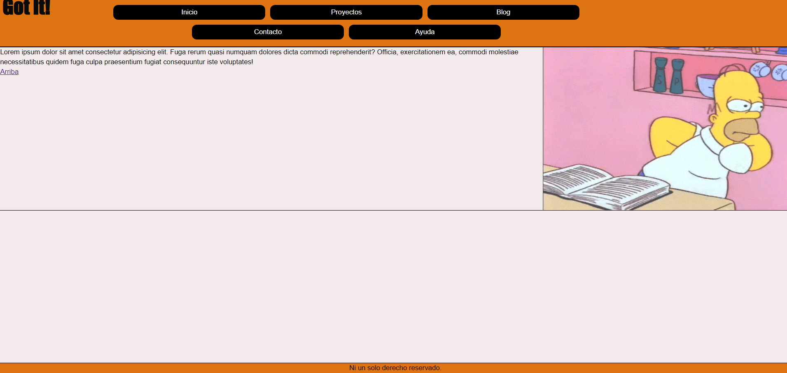

Tercer y cuarto desafios del curso
Tercer Desafio: Generar que el index y una página más a elección de nuestro proyecto sea totalemtne responsive utilizando grids para el layout, flexbox para los componentes y box modeling para terminar de acomodar los elementos. Es necesaria la utilización de media queries.
Cuarto Desafio: Generar todo nuestro proyecto responsive, utilizando grids para el layout, flexbox para los componentes y box modeling para terminar de acomodar los elementos. Es necesaria la utilización de media queries.
 Archivos del desafio 3 y 4Habiendo terminado uno ya tenia una plantilla para poder usar con el resto asi que no le vi el sentido de hacer los desafios por separado.